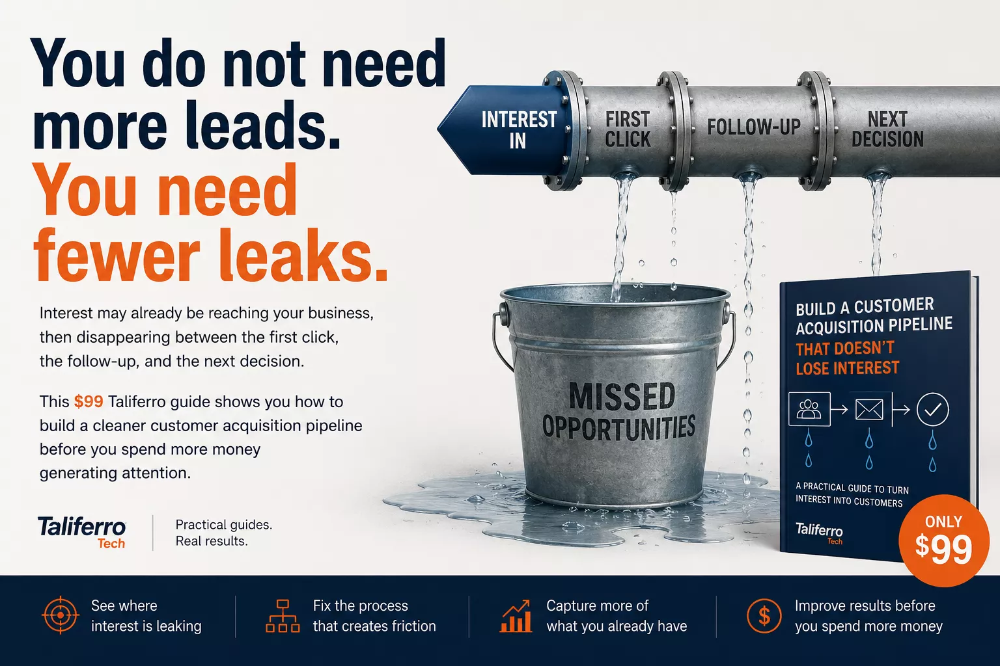

Interest may already be reaching your business, then disappearing between the first click, the follow-up, and the next decision. For $99 Taliferro gives you a cleaner customer acquisition pipeline before you spend more money generating attention.

You are buying a practical frame for how Taliferro thinks about customer acquisition: where signal comes from, how interest gets routed, and how follow-through stays visible.
Best fit for teams that know they need a better growth motion but do not want to start with a full consulting engagement.
Operators, founders, service businesses, and teams tired of random lead-generation activity.
Clarify the pipeline before you spend more money on traffic, tools, or content.
TODD as the operational system and Maya as the email execution layer.
Review it, identify your pipeline break, then decide what your next marketing move should be.
Some asked for more leads. Some asked for better conversion. Some asked why outreach felt expensive and inconsistent. The pattern underneath all of those questions was the same: the pipeline was blurry.
That is why this page exists. We wanted something lighter than a full engagement but sharper than a generic marketing download. This is a productized piece of Taliferro thinking.
Taliferro does not treat customer acquisition like disconnected tactics. We think in systems: signal, routing, follow-up, execution, and feedback.
That same thinking shaped TODD. The document is the strategy layer. TODD is the operational layer.
You need a cleaner way to think about customer acquisition before adding more channels.
You want a repeatable acquisition process without jumping immediately into a heavyweight CRM project.
You want your site, pipeline, and email marketing to work together instead of living in separate conversations.
Start with the $99 document. If you want Taliferro to help implement the pipeline, the app layer, or the Maya follow-up workflow, we can help there too.